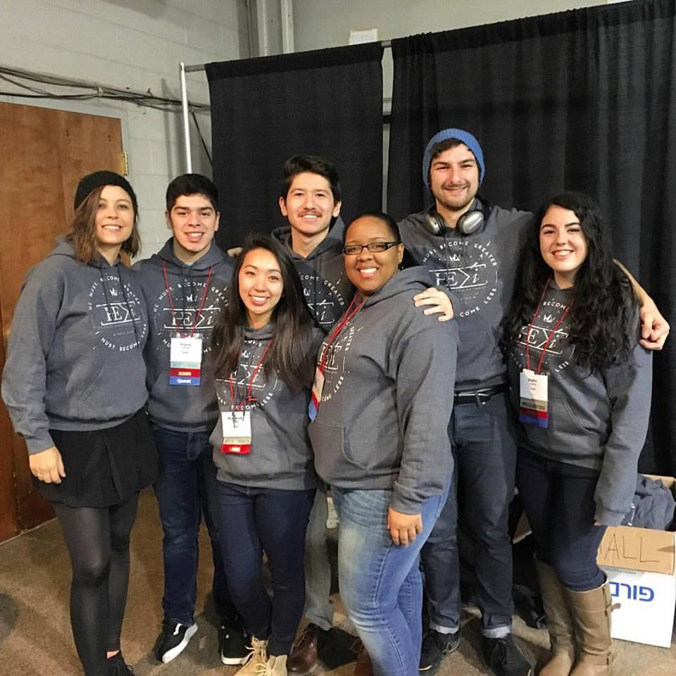

Community Service
My favorite way to volunteer is through music. Ever since middle school, I have been a part of a volunteer music team in some capacity. There were times where I would sing, play keyboard, play guitar, lead the team, or some combination of them all. Pictured below is my latest involvement, singing for a weekend-long youth conference in 2016.
Volunteer Service Trip
In 2014, I had the opportunity of traveling to the Dominican Republic to help out in its communities. My group was composed of 5 adult leaders and 15 high school juniors. Over the nine-day trip, we performed tasks of landscaping, painting, construction, public speaking, and children's ministry. During the time I spent there, I made some very good friends and unforgettable memories. Overall, the experience was both exhausting and incredibly rewarding. Attached are a few pictures from the trip.
Not counting the guy in the doorway, that is.